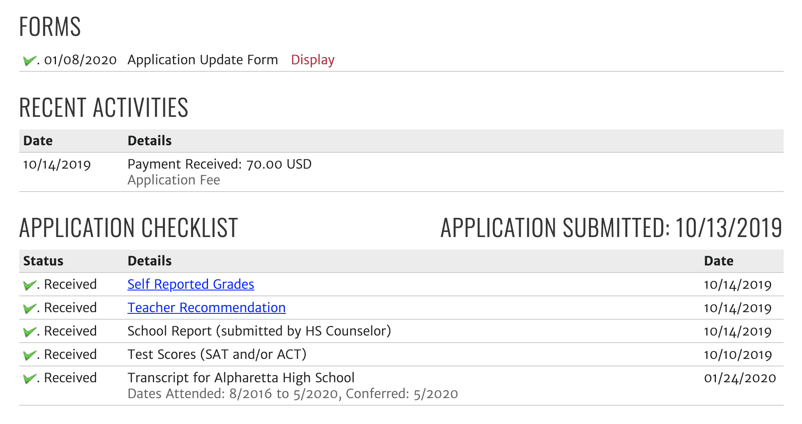

Things I have learned from College Admissions
By Amit Kulkarni
Posted on January 25, 2020
Recently, I was admitted to Georgia Tech for Computer Science. I was really surprised about my acceptance especially after seeing how competitive the school has gotten over the years. In this blog post, I'm going to share what I have learned during the college admissions process.
Holistic Review is Real

Everything matters because US colleges use a process known as holistic review when making an admissions decision. With holistic review, everything about an applicant is looked at including GPA, course rigor, test scores, extracurriculars, background & residency, demographics, major selected, community service, essays, and interviews just to name a few. However, because of this review process, admission is never guaranteed to a college even if you have a really good GPA, perfect test scores, or even if you're in the top 5% of applicants. This is because even if you have the academic credentials needed to be successful at the university, colleges want to admit students who aside from paying tuition, will strongly impact the school if they choose to attend. The only reason that a college will definitely 100% admit you is if they state a specific criteria on their website (ex. a college says that valedictorian/salutatorian are automatically admitted if they apply). Otherwise, people with a perfect GPA and perfect SAT/ACT should be able to easily get into schools like Stanford.
Mind the Deadlines!

Definitely start your college applications early. One mistake that I made during my college application process was that I didn't even read the essay prompts or even make a Common App/Coalition account until August. No matter how many schools you plan to apply to, you should create a login and get familiar with the application system (Common App, Coalition, UC Application, own individual application, etc.) that the college uses over the summer before senior year. Starting early is one key to writing a good application because before you know it, the deadline to submit your application will be tonight!
Speaking about starting early, definitely consider applying early action to a school especially if you're applying for a competitive major, and if you don't think that re-taking SAT/ACT and/or submitting mid-year grades would improve your chances. If you get deferred early action, they will consider your application again during the regular round but you can't get deferred if you apply regular. Also, you get to finish those college apps the first semester of your senior year and then take it more easy as second semester rolls around.
Finish those Standardized Tests Early

Finish SAT/ACT by end of junior year. Trust me, you won't have time to study during senior year because of college apps and you should be doing some activity (internship, job, volunteering) over the summer to improve your application. If you really want to, consider taking SAT Subject tests if you want to improve your application further. Only do this if you think your SAT/ACT score is good enough (I recommend a score at least around the mid-50% of the average acceptance of that college).
Essays

Essays are one of the most important parts of the college application. After seeing that you're academically prepared to be in the college with your high school GPA and test scores, colleges often consider the essays the next most important thing. While you may be used to writing academic essays in your school's english class, the college application essay is completely personal and is used to express your own ideas. When first starting a college essay, the first thing you want to do is read the prompt and start brainstorming ideas. Think about ways that you are going to express your own individual character while still answering the questions that are being asked. I definitely recommend asking a tutor for getting help on brainstorming what makes you unique and for giving suggestions on ways to improve the structure of your essay once you start writing drafts. Remember to start these essays early as possible as they are one of the most critical parts of the college application. You will definitely need to write several drafts before you get it to be perfect. These essays will allow colleges to understand what makes YOU different from all of those thousands of other applicants.
Extracurriculars

Do extracurriculars that you really enjoy. Colleges are specifically looking for what activities you did in the field that you actually want to study in. They would rather have someone who is really good and is passionate at one thing rather than a "well-rounded" applicant. However, make sure to do at least one other activity like maybe a sport, play an instrument, or something just for fun that still has a purpose to show that you aren't just a nerd. This article from collegevine pretty much sums up what colleges are really looking for in extracurriculars.
Recommendation Letters

Definitely ask one of your teachers and a counselor for a recommendation letter. Colleges want to see how other people think of you. Make sure that it's a teacher who you have a really good relationship with and who will write very good things about you. Along the lines of starting early, ask for your teacher/counselor recommendation by end of junior year or the beginning of senior year.
Don't Go Overboard
It's not worth applying to more than 10 schools. Research which schools you are really interested in and willing to go to before applying (don't apply just for the sake of it). I personally have applied to 11 schools but after these past few months, I have realized that I actually don't really want to go to half of the colleges that I applied to even if I do get in. Especially after considering the cost of tuition, I figured out that it won't actually be worth going to these schools over the ones offered in Georgia. Aside from applying to schools you are really passionate about, also make sure you apply to some safety schools. I recommend 2 safeties, 2-3 matches, 3-4 reach.
Keep Checking!
Once you click that submit button, you're probably super relieved to be done with your application. However, there's still more to do. Usually a day or two later, the college will email you a message with a login to an application portal. Once you login to the portal, make sure that you have completed everything that the portal says needs to be completed. Usually, this includes sending your transcript, official SAT/ACT scores (yeah collegeboard really be trying to rob us by making us pay to send a number), class rank letters, or any additional document that is required or may help your application. Do all these things before the deadline.
Extenuating Circumstances
Let your colleges know if you have had any circumstances that have prevented you from performing to your maximum potential (affected by disease, depression, etc.). However, do not lie on your application just so that you can improve your chances like *cough* Olivia Jade *cough*.
The FINAL outcome

Well, it has finally come to the day to view your application. You are so worried and your heart is beating at 200 BPM when you sit down to login to the application portal and click the "Status Update" message. You may think that your entire life depends on this one decision.
If you get accepted, then CONGRATS! You really deserve it! Don't stop trying in school and don't get affected by senioritis. Colleges still have the right to revoke (or rescind as they call it) your admission if they feel like you have been slacking off too much. Also, getting into your top choice is only one step in your life. If you stop trying now, you will have a hard time in college where you will have to do more work.
If you get deferred, don't lose hopes. You still have a good chance of getting into the college. Just remember to provide a few updates about what you have done since submitting your application for the university to consider during the regular round. Also, if that college is really your #1 choice, then let them know that in your letter of continued interest (LOCI) form.
If you get waitlisted, keep your hopes high and know that you still have a chance to get in. By being waitlisted, the college knows that you deserve to get in, but they just don't have enough space. If enough people don't commit to the university, then who knows, you may be able to secure your spot at the university!
If you get denied, know that there are many many more options. These include transferring to the university second year, going to a safety school, etc. Know that these alternative are really not that bad as you think it is. What matters more is what you actually do in college rather than what college you get into. Don't let rejections define yourself like they did to this person. Also, college admissions to top schools have really gotten difficult over the past decade. I remember recently reading a statistic about how UChicago's acceptance rate used to be 40% back in the mid-2000s but now it only has a 6.2% acceptance rate. This is because more people are interested in applying to top schools and applying to these schools have become easier with the use of online application systems such as CommonApp.
Regardless of the decision, thank everyone who supported you along the way including your teachers, parents, friends, etc.
Scholarships

So you finally got in? Well, you should still make sure that you can afford going to the school. You don't want to come out of a college graduating with $50,000 in debts that will take years to repay. As a result, definitely consider applying for scholarships to help mitigate the cost of your tuition (especially if you're going out-of-state). Personally, I have not really done much for scholarship applications (I already have Zell Miller), so I'm not really the best person to ask. However, there are plenty of online websites that you can visit that will allow you to apply for numerous scholarships. Also, be sure to check out what scholarships are offered in your school and local communities.
Important vocab:
- ED = Early Decision
- EA = Early Action
- REA = Restrictive Early Action
- RD = Regular Decision
- Rolling Decision
- Outcomes
- Accepted = You got in!
- Deferred = You didn't get in EA / REA / ED but you will be considered again during the RD round.
- Waitlisted = You could be admitted but there isn't enough space so you will be put in a queue instead.
- Denied = You didn't get in.
- Transfer Pathway
- Admissions Appeal
- Rescind
- Yield Rate
- Freshman Profile
- Tuition
- Scholarships
- FAFSA = Free Application for Federal Student Aid
If you choose this option when submitting an application during the early deadline, you are REQUIRED to attend the college if you get accepted. You can only ED to one school because it is binding.
This means that you apply during the priority deadline, but if you get accepted, you aren't required to attend.
This is similar to early action but it means that you can only apply to one private school during the early action round. Usually, you can still apply EA to other public schools. Unlike ED, if you get accepted REA, you aren't required to attend (but that kind of ruins the point).
This is the deadline during which most applicants apply. The deadline is usually in the spring semester but it depends on the college. Note that RD is not binding.
This means that the college will review each application as they receive it. There is no set deadline when you will hear back.
Pathways that allow you to get admitted into the school after spending a year(s) at another university and satisfying the requirements.
If you got denied, you can try to write a message to the college explaining why they should change their mind about the denial. It's extremely rare for an admission's decision to be changed but it is still possible.
A very rare scenario where a college decides to revoke your acceptance. Usually only happens if there is a significant drop in grades (like from straight-A to straight-C) or if you commit a major crime. Just don't do anything bad and keep up your grades and you shouldn't have to worry about this.
The percentage of applicants who commit after getting accepted. Ivy League and private universities have very high yield rates.
Can be found on a college website which shows the percentage of students admitted. It usually shows the average GPA and the 25-75% range of SAT/ACT scores of those who were admitted.
The amount that you have to pay for your classes. This does not include housing, meal plans, books, or any other expenses that you may need to pay as a college student.
A grant that is given to a limited number of students which pays for a certain amount of their total college fees. Scholarships may pay a small part of a student's tuition while others may pay for their entire college expenses (often referred to as a "full-ride"). It is often divided into need-based and merit-based scholarships.
A federal application that is required for most colleges. It is often used to determine need-based scholarships. If you are male, filling out the application also registers you for the Selective Service System (SSS).